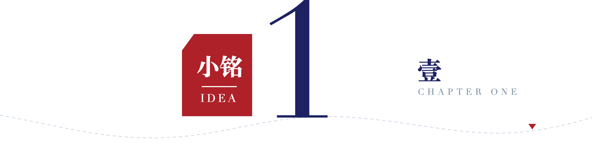
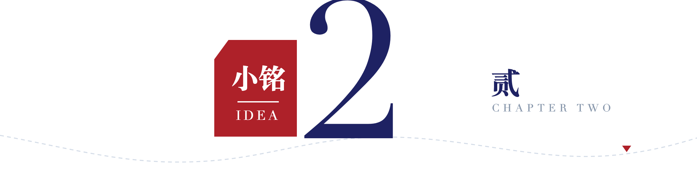

作者 | 小铭
【① 事实锚点开场】时间 ＋ 机构 ＋ 人数，一句话把新闻摆平，不抒情、不评价。约 40–60 字。
【② 悬念】把人物抬到「你好像见过他」的位置。约 40–50 字。
【③ 身份揭示 ＋ 硬数据】本名、网名、关键日期、关键数字，四个锚点全给。约 100–120 字。

【④ 轻问小标题】用一个「这名字怎么来的」式的问句，让人先松下来
【本段正文】回答上面那个问句。约 90–120 字。
【小标题】爱好/能力的起源
【本段正文】从什么具体场景开始、练了多久、在哪里被藏起来。约 250–300 字，可分 2–3 段。
【⑥ 反常识转折 —— 全文心脏】「看起来最正确的事，结果最差」
【本段正文】先给一句「很多人猜他会一路顺风顺水，其实没有。」约 15 字。
【本段正文】他做的那件「最正确的事」，以及随之而来的坏结果。关键数字独立成段。约 80–120 字。
【本段正文】他后来那个「看起来像分心」的决定。约 40 字。
【本段正文】这个决定为什么反而救了他，用他自己的原话式大白话解释。约 120 字。
【本段正文】回正的结果：最终的关键数字（分数/名次/成果）。约 80 字。

【⑦ 作者站出来】一句话把故事掰向读者
【本段正文】给一句反常识判断 ＋ 一个大白话比喻。约 80 字。
【小标题】方法是怎么找出来的
【本段正文】起点要具体到某一天、某个人、某份材料。约 150 字。
【本段正文】他提前做了什么功课、摸清了什么。约 80 字。
【本段正文】方法论：大多数人是「从热门榜单往下推」，他是「从自己真正投入过的事往回推」。约 130 字。
【本段正文】把这条路走宽：这个方向还能去哪些领域，打破大众印象。约 120 字。
【小标题】家长/读者能从这件事里拿走什么
第一，【认知纠正】
【本段正文】纠正一个流行误解 ＋ 给边界。约 120 字。
第二，【可教的方法】
【本段正文】读者今天就能照着做的步骤，去哪个官网、查什么。约 120 字。
第三，【心态许可】
【本段正文】承认不完美，把落点收回人本身。约 120 字。
【结尾升维句】一个人在成长路上能为热爱留一方天地，并把它走成脚下的路，这件事本身就值得被看见。
原创不易，感谢有你！
一起转发出去，让更多人看到。